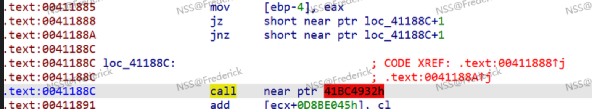

一些常见的逆向函数
index() find()找索引值
.append(ord()) +=chr()字母数字转换
简简单单的逻辑题
ord 字符串转ascii码
chr ascii码转字符串
hex 十进制转十六进制
int(a，16) 十六进制转十进制
[起点,终点,步长] python切片
zfill(2) 为不满2个宽度的字符串前添加0直到宽度为2
easy C
直接逆完事
\#include <stdio.h>
\#include <string.h>
int main()
{
char b[] = "d`vxbQd";
for (int i = 0; i < 7; i++)
{
b[i] = b[i] ^ 2;
b[i]--;
}
printf("%s\n", b);
}
有点小难的逻辑题
flag = 'xxxxxxxxxxxxxxxxxxxxx'
s = 'wesyvbniazxchjko1973652048@$+-&*<>'
result = ''
for i in range(len(flag)):
s1 = ord(flag[2*i])
s2 = ord(flag[2*i+1])
result += s[(s1+i)%34]+s[-(s2+i+1)%34]
print(result)
\# result = 'v0b9n1nkajz@j0c4jjo3oi1h1i937b395i5y5e0e$i'
#爆破脚本，菜狗不会逆向
result = 'v0b9n1nkajz@j0c4jjo3oi1h1i937b395i5y5e0e$i'
s = 'wesyvbniazxchjko1973652048@$+-&*<>'
flag = ''
l=range(len(result)//2)
#先找到s中的索引值
for i in l:
indx1 = s.index(result[2*i])
indx2 = s.index(result[2*i+1])
for num in range(32,127):
s1 = num //17
s2 = num % 17
ds1 = (s1+i)%34
ds2 = -(s2+i+1)%34
if indx1 == ds1 and indx2 == ds2:
flag += chr(num)
break
print(flag)
思路：其实从s到result从分析学来看，就是一个数列重排，flag被用作一个对应的函数关系式，只要一一验证result和s的值在哪个地方相等，就可以求出flag，index()就是找result中的值在s的哪个位置，这个index再经过逆向/爆破，可以得到flag
fakerandom
random.seed()：通过设置相同的随机种子，可以确保每次运行时获得相同的随机数序列
import random
flag = 'xxxxxxxxxxxxxxxxxxxx'
random.seed(1)
l = []
for i in range(4):
l.append(random.getrandbits(8))
result=[]
for i in range(len(l)):
random.seed(l[i])
for n in range(5):
result.append(ord(flag[i*5+n])^random.getrandbits(8))
print(result)
\# result = [201, 8, 198, 68, 131, 152, 186, 136, 13, 130, 190, 112, 251, 93, 212, 1, 31, 214, 116, 244]
import random
result = [201, 8, 198, 68, 131, 152, 186, 136, 13, 130, 190, 112, 251, 93, 212, 1, 31, 214, 116, 244]
flag = []
random.seed(1)
l = []
for i in range(4):
l.append(random.getrandbits(8))
print(l)
for i in range(len(l)):
random.seed(l[i])
for n in range(5):
flag.append((chr((result[i*5+n])^random.getrandbits(8))))
flag = ''.join(flag)
print(flag)
卡在签到题了…
if ( Str2[j] == 111 )
Str2[j] = 48;
看到有个很像flag的{hello_world},提交结果发现错了，一看伪代码，发现把0改成了o，ASCII表o对应111，0对应48
花指令
-
jump
start://花指令开始 jmp label1 DB junkcode label1: jmp label2 DB junkcode label2： jmp label3 DB junkcode label3 -
jnz和jz跳转
_asm{
jz label1
jnz label1
db junkcode
label1:
}
- 永真条件跳转
__asm{
push ebx
xor ebx,ebx
test ebx,ebx
jnz label1
jz label2
label1:
_emit junkcode
label2:
pop ebx//需要恢复ebx寄存器
}
__asm{
clc
jnz label1:
_emit junkcode
label1:
}
- call&ret构造花指令
__asm{
call label1
_emit junkcode
label1:
add dword ptr ss:[esp],8//具体增加多少根据调试来
ret
_emit junkcode
}
call指令：将下一条指令地址压入栈，再跳转执行
ret指令：将保存的地址取出，跳转执行
例题

按D转换成数据形式
右键change bytes E8换成90 就是nop
后面变黄的地址c修复即可
转到函数开头p生成函数
[HUBUCTF 2022 新生赛]ezPython
拿到题目，发现文件时.pyz结尾，先转换成py格式
uncompyle 6 -o ezPython.py ezPython.pyz
from Crypto.Util.number import *
import base64, base58
password = open("password.txt", "r").read()
tmp = bytes_to_long(password.encode("utf-8"))
ans = base64.b64encode(base58.b58encode(str(tmp))).decode()
print("I've forgot my password,could you please help me find the password?")
if ans == "M0hBajFITHVLcWV6R1BOcEM5MTR0R0J3eGZVODV6MTJjZUhGZFNHQw==":
print("You get the password!")
else:
print("Wrong! try again")
解释下，bytes_to_long()把字节转换成长整型，加密成utf-8形式，再转为字符串，转为base58，转为base64，逆过来写就行
from Crypto.Util.number import *
import base64
import base58
import hashlib
flag1="M0hBajFITHVLcWV6R1BOcEM5MTR0R0J3eGZVODV6MTJjZUhGZFNHQw=="
flag= int(base58.b58decode(base64.b64decode(flag1)))
print(flag)
flag = long_to_bytes(flag)
flag.decode("utf-8")
flag = hashlib.md5(flag).hexdigest()
print(flag)
一些习惯：打开IDAshift f12查看字符串
ctrl+x 交叉引用
Z3-slover
Solver()
创建一个求解器，在里面添加约束条件进行下一步的求解
add()
通常在solver()命令之后，用来添加约束条件，通常添加的约束条件是一个等式
check()
判断是否添加的约束条件是否有解，有解返回sat，无解返回unsat
model()
在有解的情况下，求解的交集再输出创建求解约束器
solver = Solver
添加约束条件
solver.add()
判断解是否存在
if solver.check()==sat
求解
print solver.model()
题目
#include <iostream>
using namespace std;
void flag_checker(int v, int w,int x,int y,int z);
int main(){
int v,w,x,y,z;
cout << "Input 5 random number and check your luck ;)" << endl;
cout << "Num1: ";
cin >> v;
cout << "Num2: ";
cin >> w;
cout << "Num3: ";
cin >> x;
cout << "Num4: ";
cin >> y;
cout << "Num5: ";
cin >> z;
cout << endl;
flag_checker(v,w,x,y,z);
}
void flag_checker(int v,int w, int x, int y, int z){
if ((v * 23 + w * -32 + x * 98 + y * 55 + z * 90 == 333322) &&
(v * 123 + w * -322 + x * 68 + y * 67 + z * 32 == 707724) &&
(v * 266 + w * -34 + x * 43 + y * 8 + z * 32 == 1272529) &&
(v * 343 + w * -352 + x * 58 + y * 65 + z * 5 == 1672457) &&
(v * 231 + w * -321 + x * 938 + y * 555 + z * 970 == 3372367)){
cout << "Congratulations, Here is your flag:\n";
cout << "flag{" << v << "_" << w << "_" << x << "_" << y << "_" << z << "}" << endl;
}
else{
cout << "\nSeems your luck is not in favor right now!\nBetter luck next time!" << endl;
}
}
from z3 import *
s=Solver()
v,w,x,y,z=Ints('v w x y z') #定义整数变量
s.add(v * 23 + w * -32 + x * 98 + y * 55 + z * 90 == 333322)
s.add(v * 123 + w * -322 + x * 68 + y * 67 + z * 32 == 707724)
s.add(v * 266 + w * -34 + x * 43 + y * 8 + z * 32 == 1272529)
s.add(v * 343 + w * -352 + x * 58 + y * 65 + z * 5 == 1672457)
s.add(v * 231 + w * -321 + x * 938 + y * 555 + z * 970 == 3372367)
s.check()
print(s.model())
[SWPUCTF 2022 新生赛]xor

\#include <stdio.h>
\#include <stdlib.h>
\#include <string.h>
int main()
{
char str[] = "LQQAVDyZMP]3q]emmf]uc{]vm]glap{rv]dnce";
char flag[39];
for (int i = 0; i <= 38; i++)
{
flag[i] = str[i] ^ 2;
}
printf("%s", flag);
}
easyasm
cmp [ebp+i], eax
jge short loc_40119D （大于等于）
最主要是这两行，以及[ebp+i]一开始赋值为0
eax没有初始化，我想第一次循环是不会直接跳，所以继续执行后面的内容，看到xor eax, 33h，知道和55作异或运算，逆过来就是把明文每个作XOR运算
; void __cdecl enc(char *p)
.text:00401160 _enc proc near ; CODE XREF: _main+1B↑p
.text:00401160
.text:00401160 i = dword ptr -4
.text:00401160 Str = dword ptr 8
.text:00401160
.text:00401160 push ebb
.text:00401161 mov ebp, esp
.text:00401163 push ecx
.text:00401164 mov [ebp+i], 0
.text:0040116B jmp short loc_401176
.text:0040116D ; ---------------------------------------------------------------------------
.text:0040116D
.text:0040116D loc_40116D: ; CODE XREF: _enc+3B↓j
.text:0040116D mov eax, [ebp+i]
.text:00401170 add eax, 1
.text:00401173 mov [ebp+i], eax
.text:00401176
.text:00401176 loc_401176: ; CODE XREF: _enc+B↑j
.text:00401176 mov ecx, [ebp+Str]
.text:00401179 push ecx ; Str
.text:0040117A call _strlen
.text:0040117F add esp, 4
.text:00401182 cmp [ebp+i], eax
.text:00401185 jge short loc_40119D
.text:00401187 mov edx, [ebp+Str]
.text:0040118A add edx, [ebp+i]
.text:0040118D movsx eax, byte ptr [edx]
.text:00401190 xor eax, 33h
.text:00401193 mov ecx, [ebp+Str]
.text:00401196 add ecx, [ebp+i]
.text:00401199 mov [ecx], al
.text:0040119B jmp short loc_40116D
.text:0040119D ; ---------------------------------------------------------------------------
.text:0040119D
.text:0040119D loc_40119D: ; CODE XREF: _enc+25↑j
.text:0040119D mov esp, ebp
.text:0040119F pop ebp
.text:004011A0 retn
.text:004011A0 _enc endp
Input: your flag
Encrypted result: 0x5b,0x54,0x52,0x5e,0x56,0x48,0x44,0x56,0x5f,0x50,0x3,0x5e,0x56,0x6c,0x47,0x3,0x6c,0x41,0x56,0x6c,0x44,0x5c,0x41,0x2,0x57,0x12,0x4e
#include <stdio.h>
#include <stdlib.h>
#include <string.h>
int main()
{
char flag1[] = {0x5b, 0x54, 0x52, 0x5e, 0x56, 0x48, 0x44, 0x56, 0x5f, 0x50, 0x3, 0x5e, 0x56, 0x6c, 0x47, 0x3, 0x6c, 0x41, 0x56, 0x6c, 0x44, 0x5c, 0x41, 0x2, 0x57, 0x12, 0x4e};
char flag[100] = {0};
for (int i = 0; i < strlen(flag1); i++)
{
flag[i] = flag1[i] ^ 51;
}
printf("%s\n", flag);
}
你知道什么事python吗
s = str(input("please input your flag:"))
arr=[29, 0, 16, 23, 18, 61, 43, 41, 13, 28, 88, 94, 49, 110, 66, 44, 43, 28, 91, 108, 61, 7, 22, 7, 43, 51, 44, 46, 9, 18, 20, 6, 2, 24]
if(len(s)!=35 or s[0]!='N'):
print("error")
exit(0)
for i in range(1,len(s)):
if(ord(s[i-1])^ord(s[i])!=arr[i-1]):
print("error!")
exit(0)
print("right!")
arr=[29, 0, 16, 23, 18, 61, 43, 41, 13, 28, 88, 94, 49, 110, 66, 44, 43, 28, 91, 108, 61, 7, 22, 7, 43, 51, 44, 46, 9, 18, 20, 6, 2, 24]
s = [''] * 35
s[0]='N'
for i in range(1,len(arr)+1):
s[i]=chr(ord(s[i-1])^arr[i-1])
print("".join(s))
s=[’’]*35 分配初始空间
ord()转换成ascii码
chr()转换成字符
print("".join(s))拼接
安卓逆向
java -jar jadx-1.5.1-all.jar
文件拖进来
搜索字符串‘NO’

text = '棿棢棢棲棥棷棊棐棁棚棨棨棵棢棌'
key = 987654321
flag = ''
for i in text:
\# 将结果限制在有效的 Unicode 范围内，限制在0-255范围内
flag += chr((ord(i) ^ key) % 256)
print(flag)
注意限制字符长度！
chicken_soup
花指令 E8改成90 p生成函数
%c直接转为ASCII码，c语言这点比python好
#include <stdio.h>
#include <stdlib.h>
#include <string.h>
int main()
{
unsigned char a1[] = {0xCD, 0x4D, 0x8C, 0x7D, 0xAD, 0x1E, 0xBE, 0x4A, 0x8A, 0x7D,
0xBC, 0x7C, 0xFC, 0x2E, 0x2A, 0x79, 0x9D, 0x6A, 0x1A, 0xCC,
0x3D, 0x4A, 0xF8, 0x3C, 0x79, 0x69, 0x39, 0xD9, 0xDD, 0x9D,
0xA9, 0x69, 0x4C, 0x8C, 0xDD, 0x59, 0xE9, 0xD7};
for (int i = 0; i < 38; i++)
{
a1[i] = (16 * a1[i]) | (a1[i] >> 4);
}
for (int j = 36; j > 0; j--)
{
a1[j] -= a1[j + 1];
}
for (int i = 0; i < 38; i++)
{
printf("%c", a1[i]);
}
return 0;
}


关了IDA忘记截图，索性拿别人wp
老鼠走迷宫
难崩，Windows环境有点难配
conda activate 2-27进入python3.6版本的conda环境，进入D盘目录pyinstxtractor
python pyinstxtractor.py 附件.exe
用struct.pyc修复5.pyc头文件
进入D盘pydcd的build
pycdc.exe 5.pyc
脚本
from collections import deque
#设置二维四向迷宫, 如果题目是多个小迷宫问题, 拆分多次调用脚本获取路径即可
(row, col) = (12, 12)
(i, j) = (0, 0)
maze = [
[
1, 0, 1, 1, 1, 1, 1, 1, 1, 1, 1, 1, 1, 1, 1, 1, 1, 1, 1, 1, 1, 1, 1, 1, 1],
[
1, 0, 1, 0, 0, 0, 0, 0, 0, 0, 0, 0, 0, 0, 0, 0, 0, 0, 0, 0, 0, 0, 1, 0, 1],
[
1, 0, 1, 0, 1, 1, 1, 1, 1, 1, 1, 1, 1, 1, 1, 1, 1, 0, 1, 1, 1, 0, 1, 0, 1],
[
1, 0, 1, 0, 0, 0, 0, 0, 1, 0, 0, 0, 1, 0, 0, 0, 0, 0, 1, 0, 0, 0, 1, 0, 1],
[
1, 0, 1, 1, 1, 1, 1, 0, 1, 0, 1, 0, 1, 0, 1, 1, 1, 1, 1, 0, 1, 1, 1, 0, 1],
[
1, 0, 0, 0, 1, 0, 0, 0, 1, 0, 1, 0, 1, 0, 1, 0, 1, 0, 0, 0, 1, 0, 0, 0, 1],
[
1, 1, 1, 0, 1, 1, 1, 1, 1, 0, 1, 0, 1, 0, 1, 0, 1, 0, 1, 1, 1, 1, 1, 0, 1],
[
1, 0, 1, 0, 0, 0, 1, 0, 0, 0, 1, 0, 0, 0, 1, 0, 1, 0, 0, 0, 0, 0, 1, 0, 1],
[
1, 0, 1, 1, 1, 0, 1, 0, 1, 1, 1, 1, 1, 1, 1, 0, 1, 1, 1, 1, 1, 0, 1, 0, 1],
[
1, 0, 0, 0, 0, 0, 1, 0, 0, 0, 0, 0, 1, 0, 0, 0, 0, 0, 1, 0, 1, 0, 0, 0, 1],
[
1, 0, 1, 1, 1, 1, 1, 1, 1, 0, 1, 0, 1, 0, 1, 1, 1, 0, 1, 0, 1, 1, 1, 0, 1],
[
1, 0, 1, 0, 0, 0, 0, 0, 1, 0, 1, 0, 1, 0, 0, 0, 1, 0, 0, 0, 1, 0, 0, 0, 1],
[
1, 0, 1, 0, 1, 1, 1, 0, 1, 1, 1, 0, 1, 0, 1, 0, 1, 1, 1, 0, 1, 0, 1, 1, 1],
[
1, 0, 0, 0, 1, 0, 1, 0, 1, 0, 0, 0, 1, 0, 1, 0, 0, 0, 1, 0, 1, 0, 1, 0, 1],
[
1, 1, 1, 1, 1, 0, 1, 0, 1, 0, 1, 1, 1, 0, 1, 1, 1, 0, 1, 0, 1, 0, 1, 0, 1],
[
1, 0, 1, 0, 0, 0, 1, 0, 1, 0, 0, 0, 1, 0, 1, 0, 0, 0, 1, 0, 1, 0, 1, 0, 1],
[
1, 0, 1, 0, 1, 0, 1, 0, 1, 0, 1, 0, 1, 1, 1, 0, 1, 1, 1, 1, 1, 0, 1, 0, 1],
[
1, 0, 1, 0, 1, 0, 0, 0, 1, 0, 1, 0, 1, 0, 0, 0, 1, 0, 0, 0, 1, 0, 0, 0, 1],
[
1, 0, 1, 0, 1, 1, 1, 1, 1, 0, 1, 0, 1, 0, 1, 1, 1, 0, 1, 0, 1, 1, 1, 0, 1],
[
1, 0, 1, 0, 0, 0, 1, 0, 0, 0, 1, 0, 1, 0, 0, 0, 1, 0, 1, 0, 0, 0, 1, 0, 1],
[
1, 0, 1, 1, 1, 0, 1, 1, 1, 1, 1, 0, 1, 1, 1, 0, 1, 0, 1, 1, 1, 0, 1, 0, 1],
[
1, 0, 1, 0, 0, 0, 1, 0, 0, 0, 1, 0, 1, 0, 0, 0, 1, 0, 1, 0, 1, 0, 1, 0, 1],
[
1, 0, 1, 0, 1, 1, 1, 0, 1, 0, 1, 0, 1, 0, 1, 1, 1, 0, 1, 0, 1, 0, 1, 0, 1],
[
1, 0, 0, 0, 0, 0, 0, 0, 1, 0, 0, 0, 1, 0, 0, 0, 0, 0, 0, 0, 1, 0, 0, 0, 1],
[
1, 1, 1, 1, 1, 1, 1, 1, 1, 1, 1, 1, 1, 1, 1, 1, 1, 1, 1, 1, 1, 1, 1, 0, 1]]
path_len = 0x7fffffff#如果题目未给出终点坐标，则一定会指定路径的长度，在此处修改路径长度，否则请保留path_len的极大值
#进行BFS寻找路径
def bfs(start, end, barrier):
directions = [(0, 1), (1, 0), (0, -1), (-1, 0)] # 定义四个方向的移动
for i in range(len(maze)):#获取起点和终点在列表中的索引
for j in range(len(maze[i])):
if(maze[i][j] == start):
start = (i, j)
if(maze[i][j] == end):
end = (i, j)
#以下均是bfs算法套路
queue = deque()
queue.append((start, [start])) # (当前位置, 路径)
visited = set()
visited.add(start)
while queue:
position, path = queue.popleft()
if position == end:
return path
elif len(path)==path_len:
return path
for d in directions:
next_position = (position[0] + d[0], position[1] + d[1])
if 0 <= next_position[0] < len(maze) and 0 <= next_position[1] < len(maze[0]) and \
maze[next_position[0]][next_position[1]] != barrier and next_position not in visited:
queue.append((next_position, path + [next_position]))
visited.add(next_position)
return None
#执行BFS搜索并打印结果
if __name__ == '__main__':
maze[0][1] = 'S' #如果题目给了起点终点的坐标，在这里直接给起点和终点添加特征
maze[24][23] = 'E'
path = bfs('S', 'E', 1) #bfs函数传入参数代表起点、终点、障碍的特征(若题目给出的数据无特征, 手动添加特征即可, 通常障碍是1也有可能是0或其它字符如'#')
print("移动路径坐标：", path)
print("移动路径方位：{", end='')
for i in range(1 ,len(path)):
x1, y1, x2, y2 = path[i - 1][0], path[i - 1][1], path[i][0], path[i][1]
if(x1 > x2):#上
print("w", end='')
elif(x1 < x2):#下
print("s", end='')
elif(y1 > y2):#左
print("a", end='')
elif(y1 < y2):#右
print("d", end='')
print('}')
随后md5加密